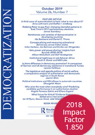
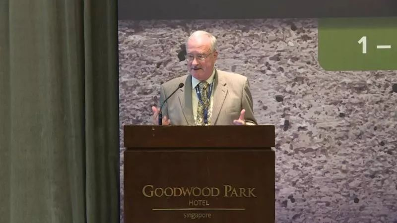

收录于合集

简 介
** 【作者】** Raymond Hinnebusch是苏格兰圣安德鲁斯大学中东、中亚和高加索研究所副所长，国际关系学院叙利亚研究中心主任，研究兴趣主要集中在中东政治与外交政策、威权主义与中东宗派主义等。其代表作主要有《中东国家的外交政策》和《从改革到起义的叙利亚》等。
** **【 编译 】****曹鹏鹏
** **【 校对 】****杨洋
** **【 审核 】****李源
** 【来源】**
Raymond Hinnebusch (2006) Authoritarian persistence, democratizationtheory and the Middle East: An overview and critique, Democratization ,13:3,373395
** 【期刊】** 《民主化》杂志致力于研究民主规范、体制在国家和文化边界内和跨国界的演变和传播，以比较的眼光特别关注全球南部地区和后发国家社会的威权体制与民主化，鼓励就民主化的许多方面进行讨论，2018年影响因子为1.850。

威权主义的持久性、民主化理论与中东:回顾与批判
Authoritarian persistence, democratization theory and the Middle East: An overview and critique

Raymond Hinnebusch ****
内容提要
如何解释中东地区的民主赤字和威权主义的持续？本文对中东地区民主赤字与威权持续的传统理论进行了回顾与批判，主要包括：现代化理论、关于发展不平衡与国家建设困境的后现代化理论、历史社会学、制度主义、理性选择模式、全球化与美国霸权等。
文章导读
民主化研究的争论
在民主化研究处于前沿的十年后，众人皆叹“第三波民主化”浪潮已经耗尽，陷入所谓混合民主、半民主或伪民主政权的沙砾之中。民主化理论在中东也面临文化例外论的质疑。作者曾指出威权政体的政治自由化或多元化更有可能取代民主化，而不是成为走向民主化的某一阶段。
民主的现实性远比西方话语的想象复杂。索伦森（Sorensen）认为，民主化具有两种层面：其一，提高竞争力，即政治自由化或多元化；第二，提高政治平等，即包容性。竞争力的增强可能与包容性的下降相关，中东革命后的民主自由化政权证明了这一论点。本文将通过回顾和批判各种理论方法来探讨关于中东威权主义的持续性和民主化前景。
**解释性方法
**
（一）现代化理论与民主化的必要性
Modernization Theory (MT) and the Requisites of Democratization
当前的民主化理论在很大程度上归因于20世纪50年代和60年代的现代化理论。现代化理论考察了发展中国家民主化的必要性。其认为，高收入国家最有可能实现民主，而识字率、城市化和非农业就业(“社会动员”指标)的上升与政治参与度增加相关。
然而，现代化理论也仅仅表明，在当代中东典型的中等收入水平之上的国家，民主化只是可能的。分析人士认为，中东地区的文化例外主义使得经济发展与民主化上升之间的自然线性关系“短路”。伊斯兰教、专制主义、世袭主义、父权主义、小团体政治和大众的消极政治参与都被认为导致该地区的民主匮乏。但是调查研究显示，强烈的伊斯兰传统并未阻碍（中东国家）对民主的支持。伊斯兰运动往往通过民主选举的方式得到缓和，只有当伊斯兰教因排斥而走向激进化时，才有可能成为民主化的障碍。
文化具有两种影响，其一是它在塑造政治合法性的概念方面很重要。只要威权政体抵御外部威胁、提供民众福利，伊斯兰教就会接受威权主义政体。伊斯兰教比许多宗教更少蒙昧主义，更注重法律。第二个影响来自传统“小群体”的普遍忠诚，这种忠诚很大程度是对部落主义的继承。一方面，这使建立公民社会和具有良好群众基础的政党变得更加困难。另一方面，威权精英会利用“裙带”关系作为与大众政治联系的一种方式。
总之，中东地区的文化可能并不是阻碍地区民主化的最有效的自变量，但在特定情况下，却极大影响了政治合法性，从而为威权主义提供了“沃土”。
（二）后现代化理论 : “ 转型 ” 社会的失衡与国族建设困境
Later Modernization Theory: Imbalances and Nation-Building Dilemmas in ‘ Transitional ’ Societies
早期现代化理论对欠发达国家民主化 预期的失败导致了对理论的修正。新理论认为第三世界民主化的一个障碍是向现代化过渡的不平衡和国家建设未解决的问题；第二个障碍是，在最不发达国家中，由于早期帝国主义随意强加领土边界，导致国家与身份之间的不相称性。这意味着最不发达国家难以就政治共同体达成基本共识，这种基本共识可以使国家内不同集团在问题和分歧上保持和平对话。而人为的边界与身份在国家制度的结构中形成矛盾，使地区国家陷入了一个严重的安全困境。例如，纳赛尔的泛阿拉伯主义呼吁可以动员其他国家的人民反对他们的统治者。
中东仍处于向现代化的过渡阶段。因此，过渡时期的典型民主化障碍依然存在。社会动员的增加(特别是识字率)、人口的增长与政治认同不统一的国家之间经济不平等的加剧相结合，形成了一种特别不利于民主的环境。
（三）社会结构与替代政治路径
Social Structure and Alternative Political Paths
巴林顿·摩尔（Barrington Moore ）开创的历史社会学传统，被西蒙·布罗姆利（ Simon Bromley）和海姆·戈贝尔（ Haim Gerber）等学者应用至中东地区。简单来说，社会结构分析认为，民主需要国家、统治者和阶级之间的平衡。表面上看，中东社会结构似乎不支持民主化。其社会结构体现在：由于中东的部落酋长制和君主制的存在，国内资产阶级的软弱，难以领导民主资产阶级革命。其次，中东政治经济的特点，即食利主义（rentierism）。大量租金归国家所有，并作为工作和福利进行分配，普通人的生计高度依赖国家，因此无法被动员起来要求民主代表权。
（四）政权体制与威权持续
Regime Institutions and Authoritarian Persistence
新制度主义学派认为，政体的制度结构对结果有至关重要的影响。威权政体根据制度化水平而有所不同，制度化水平又受到所纳入和排除的社会力量影响。
作者首先区分“威权民粹主义”（populist authoritarian）政体和“官僚威权主义”（bureaucratic authoritarian）政体。作者认为，威权民粹主义政体是以改革再分配而寻求动员和吸收群众，当前中东政体的主要制度类型是威权民粹主义。将制度分析与结构分析相结合，使我们能够理解威权民粹主义政体是如何巩固？为什么持久和为什么抵制民主。作者列举以下几个原因：
首先，威权民粹主义政体的持久性在很大程度上来自于它们有选择地纳入和排除的社会力量。第二，威权民粹主义政体打民族主义“牌”使民族主义取代民主合法性。第三，威权民粹主义政体在结构上得到巩固。其单一政党制度能够以稳定的状态向现代国家转型。第四，威权民粹主义政体具有可靠的镇压力量。第五，威权民粹主义政权倾向于削弱资产阶级及其潜在力量，吸收中下层阶级作为其统一战线。
（五）后民粹主义政治经济和政治自由化的不平衡
Post-Populist Political Economy and Lopsided Political Liberalization
威权民粹主义政体和君主制这两种政体类型都面临经济困境和全球体系的变革压力。威权民粹主义在经济发展上的模式困境，迫使所有中东威权民粹主义政权过渡到一个经济自由化的后威权民粹主义阶段(PPA)。
首先，向后威权民粹主义政体的转型使统治精英倾向利用对经济的绝对控制为其谋利。其次，经济自由化的成功不可避免地阻碍民主化的政策要求。统治精英难以在违背民粹主义社会契约、牺牲民族主义合法性的同时轻易将民主化赋予大众。最后，经济自由化的短期结果阻碍了民主。威权统治者使国内反对力量边缘化，削弱国家私有化能力，并维持资产阶级对国家的依赖。
作者认为，在后民粹主义形式的威权统治下，最高统治者仍享有免于竞争性选举的无限期任期，并保留巨大的任免权。同时，政治自由化的不平衡或阶级偏见的问题也显露出来：首先，商人可以通过议会和社团接触统治精英。其次，司法机构有权实施选择性法治。第三，允许新闻和言论自由来安抚中产阶级。第四，为了安抚中产阶级，允许民间社会和政党多元化的空间。但须确保执政党的主导地位。第五，前民粹主义选区的政治遣散和边缘化仍在继续，以防止民众起义。
后威权民粹主义经历教训是，其威权主义转化为特权阶层的权力。因此，后威权民粹主义既是民主化的替代者，也是民主化的障碍。
（六）精英计算与民主转型的风险
Elite Calculations and the Risks of Democratic Transition
迄今为止的讨论都强调了结构性因素，但政治精英的行为对政治结果也至关重要。政治精英作为理性行为者，只有他们认为自己的切身利益能够从威权主义转型中存在或加强，或者民主转型的成本和风险低于持续镇压的成本和风险时，才会实现民主化。
在这方面，过渡理论认为，精英领导的民主政治化最佳方案是：
（a）威权政体中的精英分歧
（b）政治自由派与反对派之间建立可信联盟，旨在使强硬派边缘化，并以一种政治改革(而非革命)的方式吸收民众
新政权领导人的继任可能导致政权分裂，并为达成民主协议提供机会，因为精英内部的竞争导致精英成员寻求公众支持。中东政治领导层的代际更替可能会促进民主化，尤其是在威权统治被摒弃的时期。
作者认为，在国家合法性下降、经济困境加剧的情况下，彻底的民主化进程可能导致政权崩溃或国内暴力，民主化不一定是摆脱危机的出路。中东的知识阶层希望民主化，但也担心会因此打开内乱和极端主义的大门。因此，中东的政治精英更希望接受东亚模式——“先经济，后民主”。然而，这一观点受到部分人的批评，认为只有民主化才能确保经济改革。
（七）民主化之路？
Roads to Democratization?
虽然民主的障碍是巨大的，但土耳其这一中东民主转型的成功典范和黎巴嫩模式的失败表明，如果其他区域国家具备一些有利于民主的特征，那么民主过渡的机会可能会增加。
（八）全球化和国际力量
Globalization and International Forces
全球化理论对世界范围内的治理形式提出了重要影响，但其未来发展方向却难有共识。第一种方法认为，经济自由化向边缘国家扩散，刺激跨国资产市场更加独立于国家，促使法治和政治多元化，加强民主化。第二种方法提出了一种“二分法”，即在核心和平区实行民主化，而外围战争区民主化则难以实现。中东仍处于一个外围战争地区。批判全球化理论的学者则看到了完全不同的结果。他们认为，全球化正在导致权力从国家转移，跨国公司和国际制度的权力不断增加，非国家行为体开始为中东地区寻求新自由主义药方。在最不发达国家中的弱国中，全球化阻碍了民主化进程。在西方核心国家，全球化也导致民主的空心化。
随着核心国家变得不那么民主，而外围国家变得更加政治多元化，我们所看到的是，所有国家开始向半民主靠拢。即所有国家的民主形式变得更加相似，但民主内容却有限，这种情况是否可行？
当前的国际权力格局失衡对民族主义/民粹主义版本的威权主义充满敌意，单极国际秩序也对中东的民主化发展不甚友好。安德森（ Anderson）认为，美国政府所谓的民主化，只是为了满足发动“反恐战争”的借口，美国严重偏见的外交政策使中东无法脱离外围战争区，其入侵伊拉克引发的混乱使中东国家对民主化产生质疑。
** ** 结 论****
作者对威权主义成为中东的治理模式作了几个原因总结：极端敌对的结构性条件，包括有限的现代化、尚未解决的国家问题和特定的阶级结构，使早期有限的民主国家夭折。其威权继任者找到建立与这种环境相适应的强大现代化威权主义形式。这些政权建立了包含容纳社会力量的机构，使它们能够管理社会，从而提高了现代化的门槛，而超过这一门槛，独裁统治就变得不可行。虽然后威权民粹主义面临压力，但采取的后民粹主义解决方案、经济自由化和面向西方的外交政策调整，都使后威权民粹主义适应性多元化，同时阻碍民主化。
民主化有两种途径，如果改革派威权政体能够为官僚机构带来更多的法治、更好的监管框架、教育改革和选拔机制，它们可以促进扩大中产阶级、公民社会和独立资产阶级所需的投资和经济增长，同时增加政权合法性并抑制伊斯兰激进主义。这将创造出类似于东亚民主过渡的条件。但是，如果国家问题得不到解决，这种增强政权合法性的做法是不可信的。这一途径取决于中东地区之外的某些国家的政策，尤其是要改变美国霸权的侵入性和有偏见的中东政策，并且民主只有经过长期的演变才能实现。第二条途径是“自下而上”的改革。假设现任政权的问题仍未解决，政权崩溃可能为通过谈判达成跨越国家—社会鸿沟的民主化协定提供条件。然而，正如伊拉克战争的那样，如果这种情况是美国干预或施压的副产品，结果很可能是无政府状态，而不是民主。
_ ** _ ** _ ** _ 本文由国政学人独家编译推荐**__ 扫下方二维码查看往期精彩
【新刊速递】第01期 | Review of International Studies Vol.45, No.4, 2019
▲分类导览 1
▼分类导览2